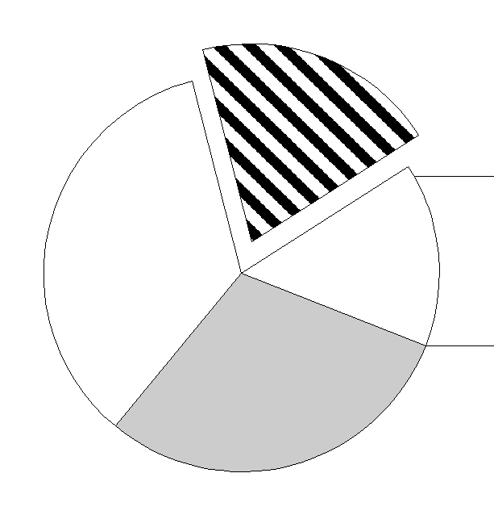
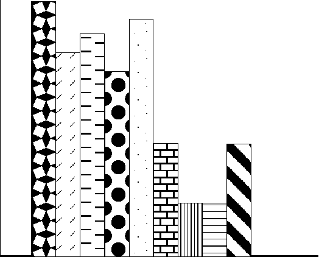
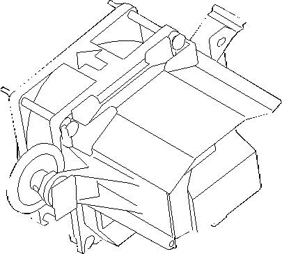

Simple drawing applications use line and arc primitives as drawing tools. They are useful, for example, in spreadsheet applications for constructing pie charts, bar charts, and graphs.
Sample Pie Chart Created with Line and Arc Primitives
Following are more illustrations that were drawn using line and arc primitives. 
Sample Bar Graph Created with Line and Arc Primitives
Computer-aided-design (CAD) applications combine line and arc primitives to draw such complex pictures as schematic diagrams for electrical wiring, blueprints for building sites, and cross-sectional views of machinery.
Sample Blueprint Created with Line and Arc Primitives
Line and arc primitives are actually two families of primitives that contain many variations of straight lines and curved lines, respectively. They are presented together in this chapter because all the variations are governed by the attributes found in the data structure LINEBUNDLE.
An application draws the line and arc primitives by first calling GpiMove or GpiSetCurrentPosition, either of which sets the current position to a specified starting point. GpiMove ignores the AM_PRESERVE mode, whereas GpiSetCurrentPosition saves the current position if the AM_PRESERVE mode is set. The more sophisticated function, GpiPolyLineDisjoint, contains its own starting point and does not need to be preceded by GpiMove, or GpiSetCurrentPosition.
Prior to calling a line or arc function, the current position can be determined with GpiQueryCurrentPosition.